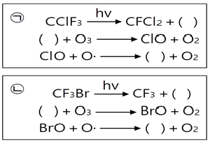
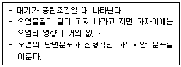
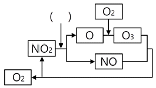
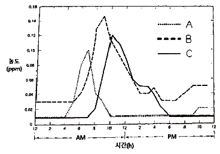
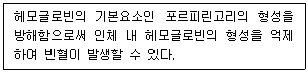
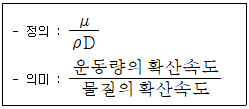
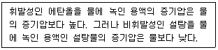
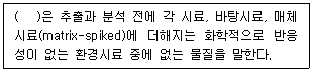
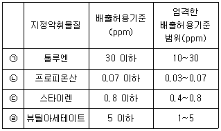

대기환경기사 (2022-04-24 기출문제)
1과목: 대기오염 개론
1. 가우시안 확산모델에 관한 내용으로 옳지 않은 것은?
- 확산계수(σy, σz)를 구하기 위한 시료 채취시간을 10분 정도로 한다.
- 고도에 따른 풍속 변화가 power law를 따른다고 가정한다.
- 오염물질이 배출원에서 연속적으로 배출된다고 가정한다.
- 경계조건을 달리 설정함으로써 오염원의 위치와 형태에 따른 오염물질의 농도를 예측할 수 있다.
(정답률: 알수없음)

2. PAN에 관한 내용으로 옳지 않은 것은?
- 대기 중의 광화학반응으로 생성된다.
- PAN의 지표식물에는 강낭콩, 상추, 시금치 등이 있다.
- 황산화물의 일종으로 가시광선을 흡수해 가시거리를 단축시킨다.
- 사람의 눈에 통증을 일으키며 식물의 잎에 흑반병을 발병시킨다.
(정답률: 알수없음)
3. 오존의 반응을 나타낸 다음 도식 중 ( ) 안에 알맞은 것은?

- ㉠ : F∙, ㉡ : C∙
- ㉠ : C∙, ㉡ : F∙
- ㉠ : Cl∙, ㉡ : Br∙
- ㉠ : F∙, ㉡ : Br∙
(정답률: 알수없음)
4. Stokes 직경의 정의로 옳은 것은?
- 구형이 아닌 입자와 침강속도가 같고 밀도가 1g/cm3인 구형입자의 직경
- 구형이 아닌 입자와 침강속도가 같고 밀도가 10g/cm3인 구형입자의 직경
- 침강속도가 1㎝/s이고 구형이 아닌 입자와 밀도가 같은 구형입자의 직경
- 구형이 아닌 입자와 침강속도가 같고 밀도가 같은 구형입자의 직경
(정답률: 알수없음)
5. 다음에서 설명하는 굴뚝에서 배출되는 연기의 모양은?

- 환상형
- 원추형
- 지붕형
- 부채형
(정답률: 알수없음)
6. 공장에서 대량의 H2S 가스가 누출되어 발생한 대기오염사건은?
- 도노라사건
- 포자리카사건
- 요코하마사건
- 보팔시사건
(정답률: 알수없음)
7. 20℃, 750mmHg에서 이산화황의 농도를 측정한 결과 0.02ppm 이었다. 이를 ㎎/m3로 환산한 값은?
- 0.008
- 0.013
- 0.⑤3
- 0.157
(정답률: 알수없음)
8. 자동차 배출가스 저감기술에 관한 내용으로 옳지 않은 것은?
- 입자상물질 여과장치는 세라믹 필터나 금속필터를 사용하여 입자상 물질을 포집하는 장치이다.
- 후처리 버너는 엔진의 배기계통에 장착하여 배출가스 중의 가연성분을 제거하는 장치이다.
- 디젤 산화촉매는 자동차 배출가스 중의 HC, CO를 탄산가스와 물로 산화시켜 정화한다.
- EBD는 촉매의 존재 하에 NOx와 선택적으로 반응할 수 있는 환원제를 주입하여 NOx를 N2로 환원하는 장치이다.
(정답률: 알수없음)
9. 다음 NOx의 광분해 사이클 중 ( ) 안에 알맞은 빛의 종류는?

- 가시광선
- 자외선
- 적외선
- β선
(정답률: 알수없음)
10. 먼지 농도가 40 ㎍/m3, 상대습도가 70%일 때, 가시거리(㎞)는? (단, 계수 A는 1.2)
- 19
- 23
- 30
- 67
(정답률: 알수없음)
11. 다이옥신에 관한 내용으로 옳지 않은 것은?
- 250~340㎚의 자외선 영역에서 광분해 될 수 있다.
- 2개의 벤젠고리와 산소, 2개 이상의 염소가 결합된 화합물이다.
- 완전 분해되더라도 연소가스 배출 시 저온에서 재생될 수 있다.
- 증기압이 높고 물에 잘 녹는다.
(정답률: 알수없음)
12. 하루 동안 시간에 따른 대기오염물질의 농도변화를 나타낸 그래프이다. A, B, C에 해당 하는 물질은?

- A = NO2, B = O3, C = NO
- A = NO, B = NO2, C = O3
- A = NO2, B = NO, C = O3
- A = O3, B = NO, C = NO2
(정답률: 알수없음)
13. 지상 100m에서의 기온이 20℃일 때, 지상 300m에서의 기온(℃)은? (단, 지상에서부터 600m까지의 평균기온감율은 0.88℃/100m)
- 15.5
- 16.2
- 17.5
- 18.2
(정답률: 알수없음)
14. 다음 중 불화수소의 가장 주된 배출원은?
- 알루미늄공업
- 코크스연소로
- 농약
- 석유정제업
(정답률: 알수없음)
15. 직경이 1~2㎛ 이하인 미세입자의 경우 세정(rain out) 효과가 작은 편이다. 그 이유로 가장 적합한 것은?
- 응축효과가 크기 때문
- 휘산효과가 작기 때문
- 부정형의 입자가 많기 때문
- 브라운 운동을 하기 때문
(정답률: 알수없음)
16. 파스킬(Pasquill)의 대기안정도에 관한 내용으로 옳지 않은 것은?
- 낮에는 풍속이 약할수록(2m/s 이하), 일사량이 강할수록 대기가 안정하다.
- 낮에는 일사량과 풍속으로, 야간에는 운량, 운고, 풍속으로부터 안정도를 구분한다.
- 안정도는 A~F까지 6단계로 구분하며 A는 매우 불안정한 상태, F는 가장 안정한 상태를 뜻한다.
- 지표가 거칠고 열섬효과가 있는 도시나 지면의 성질이 균일하지 않은 곳에서는 오차가 크게 나타날 수 있다.
(정답률: 알수없음)
17. 오존과 오존층에 관한 내용으로 옳지 않은 것은?
- 1돕슨단위는 지구 대기 중의 오존총량을 0℃, 1atm에서 두께로 환산했을 때 0.01mm에 상당하는 양이다.
- 대기 중의 오존 배경농도는 0.01~0.04ppm 정도이다.
- 오존의 생성과 소멸이 계속적으로 일어나면서 오존층의 오존 농도가 유지된다.
- 오존층은 성층권에서 오존의 농도가 가장 높은 지상 50~60㎞ 구간을 말한다.
(정답률: 알수없음)
18. 피가 100m3인 복사실에서 분당 0.2mg의 오존을 배출하는 복사기를 연속적으로 사용 하고 있다. 복사기를 사용하기 전 복사실의 오존 농도가 0.1ppm일 때, 복사기를 5시간 사용한 후 복사실의 오존 농도(ppb)는? (단, 0℃, 1기압 기준, 환기를 고려하지 않음)
- 260
- 380
- 420
- 520
(정답률: 알수없음)
19. 인체에 다음과 같은 피해를 유발하는 오염물질은?

- 다이옥신
- 납
- 망간
- 바나듐
(정답률: 알수없음)
20. 다음 중 복사역전이 가장 발생하기 쉬운 조건은?
- 하늘이 흐리고, 바람이 강하며, 습도가 낮을 때
- 하늘이 흐리고, 바람이 약하며, 습도가 높을 때
- 하늘이 맑고, 바람이 강하며, 습도가 높을 때
- 하늘이 맑고, 바람이 약하며, 습도가 낮을 때
(정답률: 알수없음)
2과목: 연소공학
21. 다음 내용과 관련 있는 무차원수는? (단, μ : 점성계수, ρ : 밀도, D : 확산계수)

- Schmidt number
- Nusselt number
- Grashof number
- Karlovitz number
(정답률: 알수없음)
22. 어떤 연료의 배출가스가 CO2 : 13%, O2 : 6.5%, N2 : 80.5%로 이루어졌을 때, 과잉공기계수는? (단, 연료는 완전 연소 됨)
- 1.54
- 1.44
- 1.34
- 1.24
(정답률: 알수없음)
23. 연료의 연소과정에서 공기비가 너무 낮은 경우 발생하는 현상은?
- CO, 매연의 발생량이 증가한다.
- 연소실 내의 온도가 감소한다.
- SOx, NOx 발생량이 증가한다.
- 배출가스에 의한 열손실이 증가한다.
(정답률: 알수없음)
24. 연료의 일반적인 특징으로 옳은 것은?
- 석탄의 휘발분이 많을수록 매연발생량이 적다.
- 공기의 산소농도가 높을수록 석탄의 착화온도가 낮다.
- C/H비가 클수록 이론공연비가 증가한다.
- 중유는 점도를 기준으로 A, B, C 중유로 구분할 수 있으며 이중 A 중유의 점도가 가장 높다.
(정답률: 알수없음)
25. 다음 중 착화온도가 가장 높은 연료는?
- 수소
- 휘발유
- 무연탄
- 목재
(정답률: 알수없음)
26. 굴뚝 배출가스 중의 HCl 농도가 200ppm이다. 세정기를 사용하여 배출가스 중의 HCl 농도를 32㎎/m3으로 저감했을 때, 세정기의 HCl 제거효율(%)은? (단, 0℃, 1atm 기준)
- 75
- 80
- 85
- 90
(정답률: 알수없음)
27. 석탄의 유동층 연소방식에 관한 설명으로 옳지 않은 것은?
- 부하변동에 적응력이 낮다.
- 유동매체의 손실로 인한 보충이 필요하다.
- 유동매체를 석회석으로 할 경우 로 내에서 탈황이 가능하다.
- 공기소비량이 많아 화격자 연소장치에 비해 배출가스량이 많은 편이다.
(정답률: 알수없음)
28. 디젤기관의 노킹현상을 방지하기 위한 방법으로 옳은 것은?
- 착화지연기간을 증가시킨다.
- 세탄가가 낮은 연료를 사용한다.
- 압축비와 압축압력을 높게 한다.
- 연료 분사개시 때 분사량을 증가시킨다.
(정답률: 알수없음)
29. 기체연료의 특징으로 옳지 않은 것은?
- 적은 과잉공기로 완전 연소가 가능하다.
- 연료의 예열이 쉽고 연소 조절이 비교적 용이하다.
- 공기와 혼합하여 점화할 때 누설에 의한 역화·폭발 등의 위험이 크다.
- 운송이나 저장이 편리하고 수송을 위한 부대설비 비용이 액체연료에 비해 적게 소요된다.
(정답률: 알수없음)
30. 수소 8%, 수분 2%로 구성된 고체연료의 고발열량이 8000kcal/㎏일 때, 이 연료의 저발열량(kcal/㎏)은?
- 7984
- 7779
- 7556
- 6835
(정답률: 알수없음)
31. 반응물의 농도가 절반으로 감소하는데 1000s가 걸렸을 때, 반응물의 농도가 초기의 1/250으로 감소할 때까지 걸리는 시간(s)은? (단, 1차 반응 기준)
- 6650
- 6966
- 7470
- 7966
(정답률: 알수없음)
32. 일반적인 디젤기관의 특징으로 옳지 않은 것은?
- 가솔린기관에 비해 납 발생량이 적은 편이다.
- 압축비가 높아 가솔린기관에 비해 소음과 진동이 큰 편이다.
- NOx는 가속 시 특히 많이 배출되며 HC는 감속 시 특히 많이 배출된다.
- 연료를 공기와 혼합하여 실린더에 흡입, 압축시킨 후 점화플러그에 의해 강제로 연소 폭발시키는 방식이다.
(정답률: 알수없음)
33. C : 85%, H : 10%, O : 3%, S : 2%의 무게비로 구성된 액체연료를 1.3의 공기비로 완전 연소할 때 발생하는 실제 습연소가스량(Sm3/㎏)은?
- 8.6
- 9.8
- 10.4
- 13.8
(정답률: 알수없음)
34. C : 85%, H : 7%, O : 5%, S : 3%의 무게비로 구성된 중유의 이론적인 (CO2)max(%)는?
- 9.6
- 12.6
- 17.6
- 20.6
(정답률: 알수없음)
35. 확산형 가스버너 중 포트형에 관한 내용으로 옳지 않은 것은?
- 포트 입구의 크기가 작으면 슬래그가 부착하여 막힐 우려가 있다.
- 기체연료와 연소용 공기를 버너 내에서 혼합시킨 뒤 로 내에 주입시킨다.
- 밀도가 큰 공기 출구는 상부에, 밀도가 작은 가스 출구는 하부에 배치되도록 한다.
- 버너 자체가 로 벽과 함께 내화벽돌로 조립되어 로 내부에 개구된 것으로 가스와 공기를 함께 가열할 수 있는 장점이 있다.
(정답률: 알수없음)
36. 기체연료의 연소형태로 옳은 것은?
- 증발연소
- 표면연소
- 분해연소
- 예혼합연소
(정답률: 알수없음)
37. 부탄가스를 완전 연소시킬 때, 부피 기준 공기연료비(AFR)는?
- 15.23
- 20.15
- 30.95
- 60.46
(정답률: 알수없음)
38. COM(coal oil mixture) 연료의 연소에 관한 내용으로 옳지 않은 것은?
- 재와 매연 발생 등의 문제점을 갖는다.
- 중유만을 사용할 때보다 미립화 특성이 양호하다.
- 중유전용 보일러를 사용하는 곳에 별도의 개조 없이 사용할 수 있다.
- 화염길이는 미분탄연소에 가깝고 화염안정성은 중유연소에 가깝다.
(정답률: 알수없음)
39. 가동(이동식)화격자의 일반적인 특징으로 옳지 않은 것은?
- 역동식화격자는 폐기물의 교반 및 연소조건이 불량하여 소각효율이 낮다.
- 회전로울러식화격자는 여러 개의 드럼을 횡축으로 배열하고 폐기물을 드럼의 회전에 따라 순차적으로 이송한다.
- 병렬요동식화격자는 고정화격자와 가동화격자를 횡방향으로 나란히 배치하고 가동화격자를 전∙후로 왕복 운동시킨다.
- 계단식화격자는 고정화격자와 가동화격자를 교대로 배치하고 가동화격자를 왕복운동시켜 폐기물을 이송한다.
(정답률: 알수없음)
40. 황의 농도가 3wt%인 중유를 매일 100kL씩 사용하는 보일러에 황의 농도가 1.5wt%인 중유를 30% 섞어 사용할 때, SO2 배출량(kL)은 몇 % 감소하는가? (단, 중유의 황 성분은 모두 SO2로 전환, 중유의 비중은 1.0)
- 30%
- 25%
- 15%
- 10%
(정답률: 알수없음)
3과목: 대기오염 방지기술
41. 유체의 흐름에서 레이놀즈(Reynolds) 수와 관련이 가장 적은 것은?
- 관의 직경
- 유체의 속도
- 관의 길이
- 유체의 밀도
(정답률: 알수없음)
42. 분무탑에 관한 설명으로 옳지 않은 것은?
- 구조가 간단하고 압력손실이 작은 편이다.
- 침전물이 생기는 경우에 적합하고 충전탑에 비해 설비비, 유지비가 적게 든다.
- 분무에 상당한 동력이 필요하고 가스 유출시 비말동반의 위험이 있다.
- 가스분산형 흡수장치로 CO, NO, N2 등의 용해도가 낮은 가스에 적용된다.
(정답률: 알수없음)
43. 자동차 배출가스 중의 질소산화물을 선택적 촉매 환원법으로 처리할 때 사용되는 환원 제로 적합하지 않은 것은?
- CO2
- NH3
- H2
- H2S
(정답률: 알수없음)
44. 다음 먼지의 입경 측정방법 중 직접측정법은?
- 현미경측정법
- 관성충돌법
- 액상침강법
- 광산란법
(정답률: 알수없음)
45. 여과집진장치를 사용하여 배출가스의 먼지 농도를 10g/m3에서 0.5g/m3으로 감소시키고자 한다. 여과집진장치의 먼지부하가 300g/m2이 되었을 때 탈진할 경우, 탈진주기(min)는? (단, 겉보기 여과속도는 2㎝/s)
- 26
- 34
- 43
- 46
(정답률: 알수없음)
46. 집진효율이 90%인 전기집진장치의 집진면적을 2배로 증가시켰을 때, 집진효율(%)은? (단, Deutsch-Anderson식 적용, 기타 조건은 동일)
- 93
- 95
- 97
- 99
(정답률: 알수없음)
47. 먼지의 입경분포(누적분포)를 나타내는 식은?
- Rayleigh 분포식
- Freundlich 분포식
- Rosin-Rammler 분포식
- Cunningham 분포식
(정답률: 알수없음)
48. 먼지의 폭발에 관한 설명으로 옳지 않은 것은?
- 비표면적이 큰 먼지일수록 폭발하기 쉽다.
- 산화속도가 빠르고 연소열이 큰 먼지일수록 폭발하기 쉽다.
- 가스 중에 분산∙부유하는 성질이 큰 먼지일수록 폭발하기 쉽다.
- 대전성이 작은 먼지일수록 폭발하기 쉽다.
(정답률: 알수없음)
49. 여과집진장치의 탈진방식 중 간헐식에 관한 설명으로 옳지 않은 것은?
- 간헐식 중 진동형은 여포의 음파진동, 횡진동, 상하진동에 의해 포집된 먼지를 털어내는 방식으로 점착성 먼지에는 사용할 수 없다.
- 집진실을 여러 개의 방으로 구분하고 방 하나씩 처리가스의 흐름을 차단하여 순차적으로 탈진하는 방식이다.
- 간헐식 중 역기류형은 여포의 먼지를 0.03~0.10초 정도의 짧은 시간 내에 높은 충격 분출압을 주어 제거하는 방식이다.
- 연속식에 비해 먼지의 재비산이 적고 높은 집진효율을 얻을 수 있다.
(정답률: 알수없음)
50. 다음은 어떤 법칙에 관한 내용인가?

- 헨리의 법칙
- 렌츠의 법칙
- 샤를의 법칙
- 라울의 법칙
(정답률: 알수없음)
51. 회전식 세정집진장치에서 직경이 10㎝인 회전판이 9620rpm으로 회전할 때 형성되는 물방울의 직경(μm)은?
- 93
- 104
- 208
- 316
(정답률: 알수없음)
52. 유해가스 처리에 사용되는 흡수액의 조건으로 옳지 않은 것은?
- 용해도가 커야 한다.
- 휘발성이 작아야 한다.
- 점성이 커야 한다.
- 용매와 화학적 성질이 비슷해야 한다.
(정답률: 알수없음)
53. 지름이 20㎝, 유효높이가 3m인 원통형 백필터를 사용하여 배출가스 4m3/s를 처리 하고자 한다. 여과속도를 0.04m/s로 할 때, 필요한 백필터의 개수는?
- 53
- 54
- 70
- 71
(정답률: 알수없음)
54. 처리가스량이 106m3/h, 입구 먼지농도가 2g/m3, 출구 먼지농도가 0.4g/m3, 총 압력손실이 72mmH2O일 때, blower의 소요동력(㎾)은?
- 425
- 375
- 245
- 187
(정답률: 알수없음)
55. 탈취방법 중 수세법에 관한 설명으로 옳지 않은 것은?
- 용해도가 높고 친수성 극성기를 가진 냄새성분의 제거에 사용할 수 있다.
- 주로 분뇨처리장, 계란건조장, 주물공장 등의 악취제거에 적용된다.
- 수온변화에 따라 탈취효과가 크게 달라지는 것이 단점이다.
- 조작이 간단하며 처리효율이 우수하여 주로 단독으로 사용된다.
(정답률: 알수없음)
56. 다이옥신 제어방법에 관한 설명으로 옳지 않은 것은?
- 250~340㎚의 자외선을 조사하여 다이옥신을 분해할 수 있다.
- 다이옥신의 발생을 억제하기 위해 PVC, PCB가 포함된 제품을 소각하지 않는다.
- 소각로에서 접촉촉매산화를 유도하기 위해 철, 니켈 성분을 함유한 쓰레기를 투입한다.
- 다이옥신은 저온에서 재생될 수 있으므로 소각로를 고온으로 유지해야 한다.
(정답률: 알수없음)
57. 다음 중 알칼리용액을 사용한 처리가 가장 적합하지 않은 오염물질은?
- HCl
- Cl2
- HF
- CO
(정답률: 알수없음)
58. 원심력 집진장치에 블로우 다운(blow down)을 적용하여 얻을 수 있는 효과에 해당하지 않는 것은?
- 유효 원심력 감소를 통한 운영비 절감
- 원심력 집진장치 내의 난류억제
- 포집된 먼지의 재비산 방지
- 원심력 집진장치 내의 먼지부착에 의한 장치폐쇄 방지
(정답률: 알수없음)
59. 복합 국소배기장치에 사용되는 댐퍼조절평형법(또는 저항조절평형법)의 특징으로 옳지 않은 것은?
- 오염물질 배출원이 많아 여러 개의 가지 덕트를 주 덕트에 연결할 필요가 있을 때 주로 사용한다.
- 덕트의 압력손실이 클 때 주로 사용한다.
- 공정 내에 방해물이 생겼을 때 설계변경이 용이하다.
- 설치 후 송풍량 조절이 불가능하다.
(정답률: 알수없음)
60. 후드의 설치 및 흡인에 관한 내용으로 옳지 않은 것은?
- 발생원에 최대한 접근시켜 흡인한다.
- 주 발생원을 대상으로 국부적인 흡인방식을 취한다.
- 후드의 개구면적을 넓게 한다.
- 충분한 포착속도(capture velocity)를 유지한다.
(정답률: 알수없음)
4과목: 대기오염 공정시험기준(방법)
61. 자외선/가시선 분광법에 따라 10mm 셀을 사용하여 측정한 시료의 흡광도가 0.1이었다. 동일한 시료에 대해 동일한 조건에서 20mm 셀을 사용하여 측정한 흡광도는?
- 0.⑤
- 0.10
- 0.12
- 0.20
(정답률: 알수없음)
62. 대기오염공정시험기준 총칙 상의 시험기재 및 용어에 관한 내용으로 옳지 않은 것은?
- 시험조작 중 “즉시”란 30초 이내에 표시된 조작을 하는 것을 뜻한다.
- “정확히 단다”라 함은 규정한 양의 검체를 취하여 분석용 저울로 0.1㎎까지 다는 것을 뜻한다.
- 액체성분의 양을 “정확히 취한다” 함은 메스피펫, 메스실린더 또는 이와 동등 이상의 정도를 갖는 용량계를 사용하여 조작하는 것을 뜻한다.
- “항량이 될 때까지 건조한다”라 함은 따로 규정이 없는 한 보통의 건조방법으로 1시간 더 건조 또는 강열할 때 전후 무게의 차가 매 g당 0.3㎎ 이하일 때를 뜻한다.
(정답률: 알수없음)
63. 다음 중 여과재로 “카아보란덤”을 사용하는 분석대상물질은?
- 비소
- 브로민
- 벤젠
- 이황화탄소
(정답률: 알수없음)
64. 기체 중의 오염물질 농도를 ㎎/m3로 표시했을 때 m3이 의미하는 것은?
- 100℃, 1atm에서의 기체용적
- 표준상태에서의 기체용적
- 상온에서의 기체용적
- 절대온도, 절대압력 하에서의 기체용적
(정답률: 알수없음)
65. 환경대기 중의 아황산가스 측정방법에 해당하지 않는 것은?
- 적외선형광법
- 용액전도율법
- 불꽃광도법
- 흡광차분광법
(정답률: 알수없음)
66. 이온크로마토그래프의 일반적인 장치 구성을 순서대로 나열한 것은?
- 펌프－시료주입장치－용리액조－분리관－검출기－써프렛서
- 용리액조－펌프－시료주입장치－분리관－써프렛서－검출기
- 시료주입장치－펌프－용리액조－써프렛서－분리관－검출기
- 분리관－시료주입장치－펌프－용리액조－검출기－써프렛서
(정답률: 알수없음)
67. 배출가스 중의 휘발성유기화합물(VOCs) 시료채취방법에 관한 내용으로 옳지 않은 것은?
- 흡착관법의 시료채취량은 1~5L 정도로, 시료흡입속도 100~250mL/min 정도로 한다.
- 흡착관법에서 누출시험을 실시한 후 시료를 도입하기 전에 가열한 시료채취관 및 연결관을 시료로 충분히 치환해야 한다.
- 시료채취주머니방법에 사용되는 시료채취주머니는 빛이 들어가지 않도록 차단해야 하며 시료채취 이후 24시간 이내에 분석이 이루어지도록 해야 한다.
- 시료채취주머니방법에 사용되는 시료채취주머니는 새 것을 사용하는 것을 원칙으로 하되 재사용하는 경우 수소나 아르곤가스를 채운 후 6시간 동안 놓아둔 후 퍼지(purge) 시키는 조작을 반복해야 한다.
(정답률: 알수없음)
68. 환경대기 중의 유해 휘발성유기화합물을 고체흡착 용매추출법으로 분석할 때 사용하는 추출용매는?
- CS2
- PCB
- C2H5OH
- C6H14
(정답률: 알수없음)
69. 대기오염공정시험기준 총칙 상의 온도에 관한 내용으로 옳지 않은 것은?
- 상온은 15~25℃, 실온은 1~35℃로 한다.
- 온수는 60~70℃, 열수는 약 100℃를 말한다.
- 찬 곳은 따로 규정이 없는 한 0~30℃의 곳을 뜻한다.
- 냉후(식힌 후)라 표시되어 있을 때는 보온 또는 가열 후 실온까지 냉각된 상태를 뜻한다.
(정답률: 알수없음)
70. 환경대기 중의 다환방향족탄화수소류를 기체크로마토그래피/질량분석법으로 분석할 때 사용되는 용어에 관한 설명 중 ( ) 안에 알맞은 것은?

- 절대표준물질
- 외부표준물질
- 매체표준물질
- 대체표준물질
(정답률: 알수없음)
71. 4-아미노안티피린 용액과 핵사사이아노철(Ⅲ) 산포타슘 용액을 순서대로 가해 얻어진 적색액의 흡광도를 측정하여 농도를 계산하는 오염물질은?
- 배출가스 중 페놀화합물
- 배출가스 중 브로민화합물
- 배출가스 중 에틸렌옥사이드
- 배출가스 중 다이옥신 및 퓨란류
(정답률: 알수없음)
72. 굴뚝 내부 단면의 가로길이가 2m, 세로길이가 1.5m일 때, 굴뚝의 환산직경(m)은? (단, 굴뚝 단면은 사각형이며, 상·하 면적이 동일함)
- 1.5
- 1.7
- 1.9
- 2.0
(정답률: 알수없음)
73. 원자흡수분광광도법에서 사용하는 용어 정의로 옳지 않은 것은?
- 충전가스 : 중공음극램프에 채우는 가스
- 선프로파일 : 파장에 대한 스펙트럼선의 폭을 나타내는 곡선
- 공명선 : 원자가 외부로부터 빛을 흡수했다가 다시 먼저 상태로 돌아갈 때 방사하는 스펙트럼선
- 역화 ： 불꽃의 연소속도가 크고 혼합기체의 분출속도가 작을 때 연소현상이 내부로 옮겨 지는 것
(정답률: 알수없음)
74. 유류 중의 황함유량 분석 방법 중 방사선여기법에 관한 내용으로 옳지 않은 것은?
- 여기법 분석계의 전원 스위치를 넣고 1시간 이상 안정화시킨다.
- 석유 제품의 시료채취 시 증기의 흡입은 될 수 있는 한 피해야 한다.
- 시료에 방사선을 조사하고 여기된 황 원자에서 발생하는 γ선의 강도를 측정한다.
- 시료를 충분히 교반한 후 준비된 시료셀에 기포가 들어가지 않도록 주의하여 액 층의 두께가 5~20mm가 되도록 시료를 넣는다.
(정답률: 알수없음)
75. 환경대기 중의 금속화합물 분석을 위한 주시험방법은?
- 원자흡수분광광도법
- 자외선/가시선분광법
- 이온크로마토그래피법
- 비분산적외선분광분석법
(정답률: 알수없음)
76. 굴뚝 배출가스 중의 질소산화물을 연속적으로 자동측정하는데 사용되는 자외선흡수분석계의 구성에 관한 내용으로 옳지 않은 것은?
- 광원 : 중수소방전관 또는 중압수은 등을 사용한다.
- 시료셀 : 시료가스가 연속적으로 흘러갈 수 있는 구조로 되어 있으며 그 길이는 200~500mm이고 셀의 창은 자외선 및 가시광선이 투과할 수 있는 재질이어야 한다.
- 광학필터 : 프리즘과 회절격자 분광기 등을 이용하여 자외선 또는 적외선 영역의 단색광을 얻는 데 사용된다.
- 합산증폭기 : 신호를 증폭하는 기능과 일산화질소 측정파장에서 아황산가스의 간섭을 보정하는 기능을 가지고 있다.
(정답률: 알수없음)
77. 굴뚝에서 배출되는 건조배출가스의 유량을 연속적으로 자동 측정하는 방법에 관한 내용으로 옳지 않은 것은?
- 유량 측정방법에는 피토관, 열선유속계, 와류유속계를 사용하는 방법이 있다.
- 와류유속계를 사용할 때에는 압력계와 온도계를 유량계 상류 측에 설치해야 한다.
- 건조배출가스 유량은 배출되는 표준상태의 건조배출가스량[Sm3(5분 적산치)]으로 나타낸다.
- 열선유속계를 사용하는 방법으로 시료채취부는 열선과 지주 등으로 구성되어 있으며 열선으로 텅스텐이나 백금선 등이 사용된다.
(정답률: 알수없음)
78. 굴뚝 단면이 상·하 동일 단면적의 원형인 경우 굴뚝 배출시료 측정점에 관한 설명으로 옳지 않은 것은?
- 굴뚝 직경이 1.5m인 경우 측정점수는 8점이다.
- 굴뚝 직경이 3m인 경우 반경 구분수는 3이다.
- 굴뚝 직경이 4.5m를 초과할 경우 측정점수는 20점이다.
- 굴뚝 단면적이 1m2 이하로 소규모일 경우 굴뚝 단면의 중심을 대표점으로 하여 1점만 측정한다.
(정답률: 알수없음)
79. 비분산적외선분광분석법에서 사용하는 용어 정의로 옳지 않은 것은?
- 정필터형 : 측정성분이 흡수되는 적외선을 그 흡수파장에서 측정하는 방식
- 비분산 : 빛을 프리즘이나 회절격자와 같은 분산소자에 의해 분산하지 않는 것
- 비교가스 : 시료 셀에서 적외선 흡수를 측정하는 경우 대조가스로 사용하는 것으로 적외선을 흡수하지 않는 가스
- 반복성 : 동일한 방법과 조건에서 동일한 분석계를 사용하여 여러 측정대상을 장시간에 걸쳐 반복적으로 측정하는 경우 각각의 측정치가 일치하는 정도
(정답률: 알수없음)
80. 기체크로마토그래피의 고정상 액체가 만족시켜야 할 조건에 해당하지 않는 것은?
- 화학적 성분이 일정해야 한다.
- 사용온도에서 점성이 작아야 한다.
- 사용온도에서 증기압이 높아야 한다.
- 분석대상 성분을 완전히 분리할 수 있어야 한다.
(정답률: 알수없음)
5과목: 대기환경관계법규
81. 대기환경보전법령상 사업장별 환경기술인의 자격기준에 관한 내용으로 옳지 않은 것은?
- 4종사업장과 5종사업장 중 기준 이상의 특정대기유해물질이 포함된 오염물질을 배출하는 경우 3종사업장에 해당하는 기술인을 두어야 한다.
- 1종사업장과 2종사업장 중 1개월 동안 실제 작업한 날만을 계산하여 1일 평균 17시간 이상 작업하는 경우 해당 사업장의 기술인을 각각 2 명 이상 두어야 한다.
- 대기환경기술인이 소음∙진동관리법에 따른 소음∙진동환경기술인 자격을 갖춘 경우에는 소음∙진동환경기술인을 겸임할 수 있다.
- 전체배출시설에 대해 방지시설 설치 면제를 받은 사업장과 배출시설에서 배출되는 오염 물질 등을 공동방지시설에서 처리하는 사업장은 5종사업장에 해당하는 기술인을 둘 수 없다.
(정답률: 알수없음)
82. 대기환경보전법령상 대기오염물질 발생량 산정에 필요한 항목에 해당하지 않는 것은?
- 배출시설의 시간당 대기오염물질 발생량
- 일일조업시간
- 배출허용기준 초과 횟수
- 연간가동일수
(정답률: 알수없음)
83. 대기환경보전법령상 배출부과금 납부의무자가 납부기한 전에 배출부과금을 납부할 수 없다고 인정되어 징수를 유예하거나 그 금액을 분할납부하게 할 수 있는 경우에 해당하지 않는 것은?
- 천재지변으로 사업자의 재산에 중대한 손실이 발생한 경우
- 사업에 손실을 입어 경영상으로 심각한 위기에 처하게 된 경우
- 배출부과금이 납부의무자의 자본금을 1.5배 이상 초과하는 경우
- 징수유예나 분할납부가 불가피하다고 인정되는 경우
(정답률: 알수없음)
84. 환경정책기본법령상 일산화탄소(CO)의 대기환경기준(ppm)은? (단, 1시간 평균치 기준)
- 0.25 이하
- 0.5 이하
- 25 이하
- 50 이하
(정답률: 알수없음)
85. 실내공기질 관리법령상 공항시설 중 여객터미널에 대한 라돈의 실내공기질 권고기준은? (단, 단위는 Bq/m3)
- 100 이하
- 148 이하
- 200 이하
- 248 이하
(정답률: 알수없음)
86. 대기환경보전법령상 사업자가 스스로 방지시설을 설계∙시공하려는 경우 시∙도지사에게 제출해야 하는 서류에 해당하지 않는 것은?
- 기술능력 현황을 적은 서류
- 공정도
- 배출시설의 위치 및 운영에 관한 규약
- 원료(연료를 포함) 사용량, 제품생산량 및 대기오염물질 등의 배출량을 예측한 명세서
(정답률: 알수없음)
87. 대기환경보전법령상 위임업무의 보고 횟수 기준이 '수시'인 업무내용은?
- 환경오염사고 발생 및 조치사항
- 자동차 연료 및 첨가제의 제조∙판매 또는 사용에 대한 규제현황
- 자동차 첨가제의 제조기준 적합여부 검사현황
- 수입자동차의 배출가스 인증 및 검사현황
(정답률: 알수없음)
88. 대기환경보전법령상 1년 이하의 징역이나 1천만원 이하의 벌금에 처하는 경우에 해당하지 않는 것은?
- 배출시설의 설치를 완료한 후 가동개시 신고를 하지 않고 조업한 자
- 환경상의 위해가 발생하여 제조∙판매 또는 사용을 규제당한 자동차 연료∙첨가제 또는 촉매제를 제조하거나 판매한 자
- 측정기기 관리대행업의 등록 또는 변경 등록을 하지 않고 측정기기 관리업무를 대행한 자
- 환경부장관에게 받은 이륜자동차정기검사 명령을 이행하지 않은 자
(정답률: 알수없음)
89. 대기환경보전법령상 석탄사용시설의 설치기준에 관한 내용으로 옳지 않은 것은? (단, 유효굴뚝높이가 440m 미만인 경우)
- 배출시설의 굴뚝높이는 100m 이상으로 한다.
- 석탄저장은 옥내저장시설(밀폐형 저장시설 포함) 또는 지하저장시설에 해야 한다.
- 굴뚝에서 배출되는 아황산가스, 질소산화물, 먼지 등의 농도를 확인할 수 있는 기기를 설치해야 한다.
- 석탄연소재는 덮개가 있는 차량을 이용하여 운반해야 한다.
(정답률: 알수없음)
90. 실내공기질 관리법령의 적용대상에 해당하지 않는 것은?
- 지하역사
- 병상 수가 100개인 의료기관
- 철도역사의 연면적 1천5백제곱미터인 대합실
- 공항시설 중 연면적 1천5백제곱미터인 여객터미널
(정답률: 알수없음)
91. 대기환경보전법령상 자가측정의 대상∙항목 및 방법에 관한 내용으로 옳지 않은 것은?
- 굴뚝 자동측정기기를 설치하여 먼지항목에 대한 자동측정자료를 전송하는 배출구의 경우 매연항목에 대해서도 자가측정을 한 것으로 본다.
- 안전상의 이유로 자가측정이 곤란하다고 인정받은 방지시설설치면제사업장의 경우 대행 기관을 통해 연 1회 이상 자가측정을 해야 한다.
- 굴뚝 자동측정기기를 설치한 배출구의 경우 자동측정자료를 전송하는 항목에 한정하여 자동측정자료를 자가측정자료에 우선하여 활용해야 한다.
- 측정대상시설이 중유 등 연료유만을 사용하는 시설인 경우 황산화물에 대한 자가측정은 연료의 황함유분석표로 갈음할 수 있다.
(정답률: 알수없음)
92. 대기환경보전법령상 “온실가스''에 해당하지 않는 것은?
- 수소불화탄소
- 과염소산
- 육불화황
- 메탄
(정답률: 알수없음)
93. 대기환경보전법령상 인증을 면제할 수 있는 자동차에 해당하는 것은?
- 항공기 지상 조업용 자동차
- 국가대표 선수용 자동차로서 문화체육관광부 장관의 확인을 받은 자동차
- 여행자 등이 다시 반출할 것을 조건으로 일시 반입하는 자동차
- 주한 외국군인의 가족이 사용하기 위해 반입하는 자동차
(정답률: 알수없음)
94. 대기환경보전법령상 자동차 운행정지표지의 바탕색은?
- 회색
- 녹색
- 노란색
- 흰색
(정답률: 알수없음)
95. 대기환경보전법령상 자동차연료형 첨가제의 종류에 해당하지 않는 것은? (단, 기타 사항은 고려하지 않음)
- 세탄가첨가제
- 다목적첨가제
- 청정분산제
- 유동성향상제
(정답률: 알수없음)
96. 대기환경보전법령상의 용어 정의로 옳지 않은 것은?
- 가스 : 물질이 연소∙합성∙분해될 때 발생하거나 물리적 성질로 인해 발생하는 기체상물질
- 기후∙생태계 변화유발물질 : 지구온난화 등으로 생태계의 변화를 가져올 수 있는 기체상 물질로서 온실가스와 환경부령으로 정하는 것
- 휘발성유기화합물 : 석유화학제품, 유기용제, 그 밖의 물질로서 관계 중앙행정기관의 장이 고시하는 것
- 매연 : 연소할 때 생기는 유리탄소가 주가 되는 미세한 입자상물질
(정답률: 알수없음)
97. 대기환경보전법령상 초과부과금의 산정에 필요한 오염물질 1㎏당 부과금액이 가장 높은 것은?
- 시안화수소
- 암모니아
- 먼지
- 이황화탄소
(정답률: 알수없음)
98. 악취방지법령상의 용어 정의로 옳지 않은 것은?
- “통합악취”란 두 가지 이상의 악취물질이 함께 작용하여 사람의 후각을 자극하여 불쾌감과 혐오감을 주는 냄새를 말한다.
- "악취배출시설”이란 악취를 유발하는 시설, 기계, 기구, 그 밖의 것으로서 환경부장관이 관계 중앙행정기관의 장과 협의하여 환경부령으로 정하는 것을 말한다.
- "악취”란 황화수소, 메르캅탄류, 아민류, 그 밖에 자극성이 있는 물질이 사람의 후각을 자극하여 불쾌감과 혐오감을 주는 냄새를 말한다.
- “지정악취물질”이란 악취의 원인이 되는 물질로서 환경부령으로 정하는 것을 말한다.
(정답률: 알수없음)
99. 대기환경보전법령상 특정대기유해물질에 해당하지 않는 것은?
- 프로필렌 옥사이드
- 니켈 및 그 화합물
- 아크를레인
- 1,3-부타디엔
(정답률: 알수없음)
100. 악취방지법령상 지정악취물질과 배출허용기준, 엄격한 배출허용기준 범위의 연결이 옳지 않은 것은? (단, 공업지역 기준)

- ㉠
- ㉡
- ㉢
- ㉣
(정답률: 알수없음)